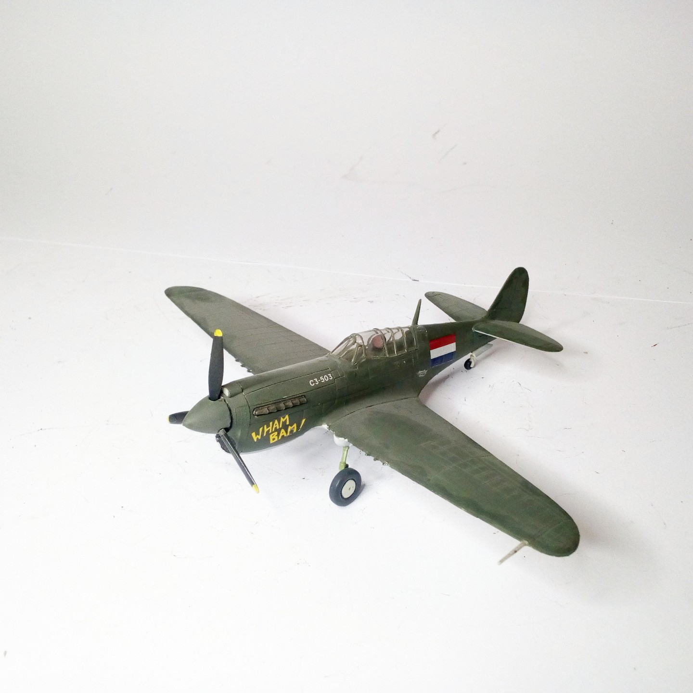
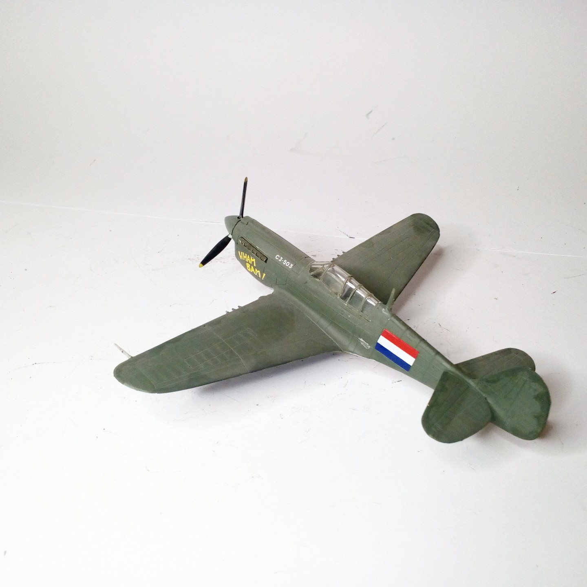

Aerei · scale model archive
Curtiss P40N Warhawk
Curtiss P40N Warhawk — Kit: Matchbox, Scale: 1/72. 120 Sqn Nederlands East Indies AF Australia 1944 #1/72 #Matchbox

Photo gallery

English description
120 Sqn Nederlands East Indies AF Australia 1944
#1/72 #Matchbox
Descrizione italiana
120 Sqn Nederlands East Indies AF Australia 1944.